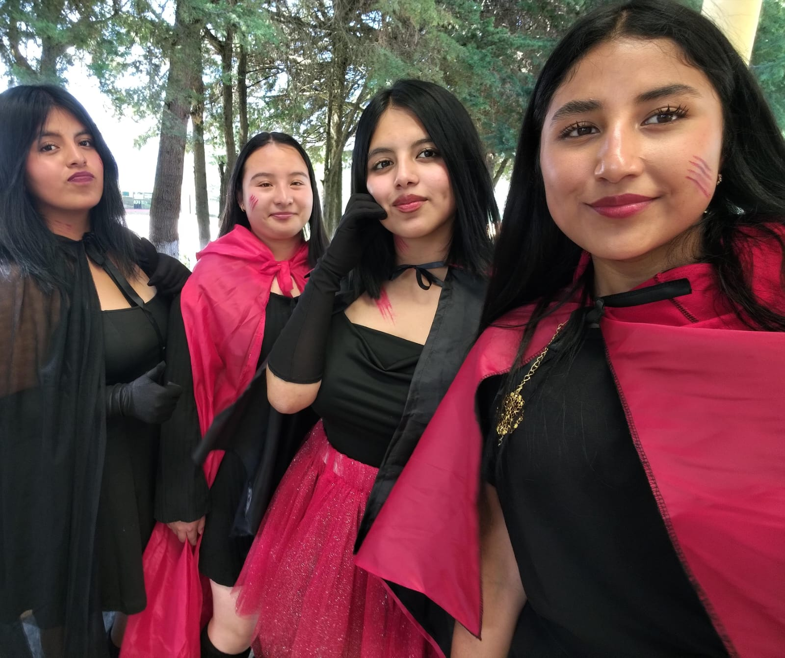
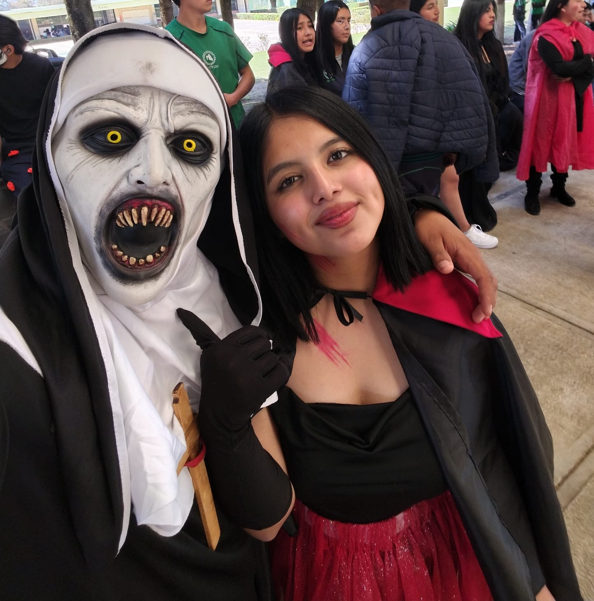

Descripción breve
Vampira es una figura inspirada en el mito clásico de los seres nocturnos: elegante, misteriosa y poderosa. Esta versión representa a una mujer inmortal que recorre la noche con porte majestuoso y mirada penetrante. Su vestimenta refleja un estilo gótico refinado, y su presencia evoca respeto y fascinación. El personaje busca reinterpretar el arquetipo tradicional con un enfoque más sofisticado y autónomo.
Categoría
Fantasía oscura / Mito clásico reinterpretado
Detalles del vestuario
- Vestido: vestido largo negro con detalles en encaje, corte elegante.
- Botas: botas altas negras con tacón bajo.
- Capa: capa larga de terciopelo oscuro, con cuello alto.
- Accesorios: colgante con piedra roja, guantes de encaje, maquillaje pálido.
- Maquillaje: base clara, ojos delineados intensamente, labios en tono vino o rojo profundo.
- Materiales prohibidos/evitar: no usar colmillos reales, sangre falsa en exceso, objetos punzantes ni elementos que dificulten la movilidad o respiración.
Declaración de cumplimiento de reglas de seguridad y respeto
Yo, Fernanda Donaciano Martinez, declaro que el personaje y el vestuario cumplen con las normas de seguridad y respeto establecidas por la institución. El disfraz no incluye objetos peligrosos ni materiales inflamables, respeta la dignidad de las personas y no promueve estereotipos ofensivos. Me comprometo a usar el vestuario de forma responsable durante la presentación y a seguir las indicaciones del personal docente y de seguridad.